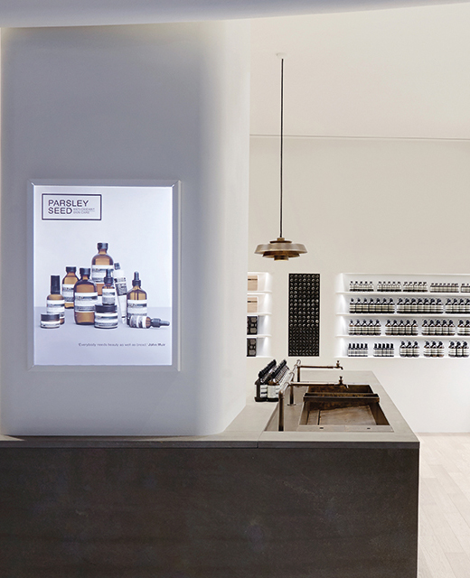

- 비솝의 story
- 
- 비솝은 1987년 멜버른에서 설립되었습니다. 최고 품질의 스킨,
헤어 그리고 바디 제품을 만들어 내는 것이 변함없는 비솝의
목표입니다.우리는 식물성 재료와 연구실에서 제조된 성분들을
공급하기 위해 폭넓은 조사를 하며, 반드시 효능과 안전성이
입증된 성분만을 사용합니다. 전문적인 지식을 가진 뷰티
상담가들은 하나 하나 개성적인 비솝 매장에서 제품라인을
소개하고, 고객이 적합한 제품을 고를 수 있도록 안내해 드릴 수
있어 매우 기쁩니다.
- 비솝의 철학
- 비솝은 지적 정확성과 비전, 기발한 아이디어를 통한 노력을 매우
중요시 여기고 있습니다. 비솝은 제품을 만들 때 피부가 필요로
하는 것, 주변 환경, 시간적 제약을 고려하는 등 삶을 대할 때만큼의
세심한 관심을 기울이고 있습니다. 또한 비솝은 건강한 식단,
적당한 운동과 레드와인, 꾸준한 독서 등 균형 잡힌 생활 속에서
제품을 사용할 것을 독려하고 있습니다.
- 시그니처 매장
시그니처 스토어
비솝은 창립 후 29년 동안 전세계 각지에 여러 스토어를
오픈해왔습니다. 그 과정에서 예상치 못했던 다양한
차이점을 발견하게 되었는데, 이를 이해하고 절충하는
과정에서 오히려 깊은 친밀감과 조화로움을 경험할 수
있었습니다. 파리, 런던, 뉴욕, 도쿄, 취리히, 홍콩, 싱가포르, 대만에서비솝의 시그니처 스토어를 만나보실 수 있고
그 외에도 유럽, 아시아, 미국 각지에 매장을 두고 있습니다.
more